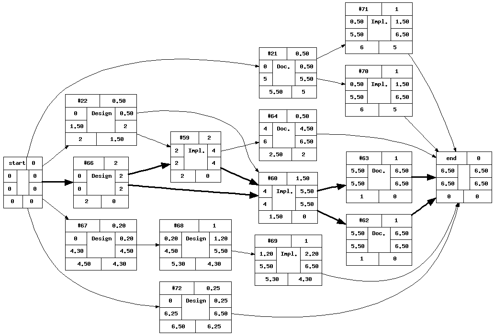
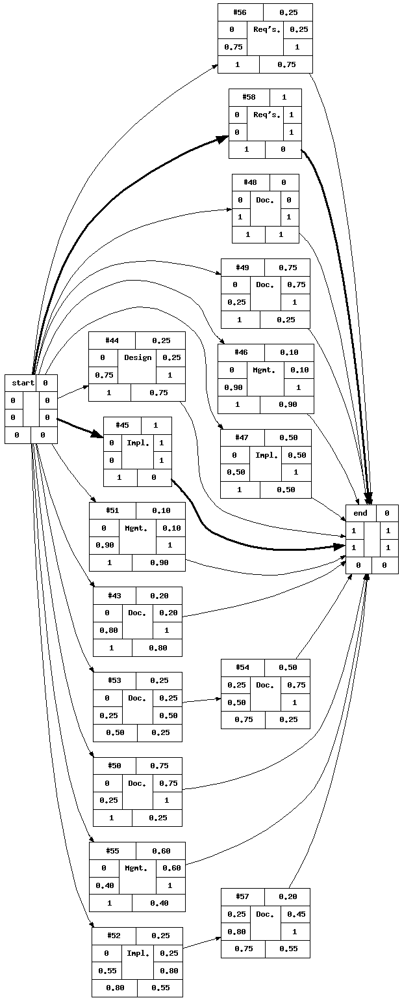

| Version 6 (modified by c_kara, 2 months ago) |
|---|
Activity Plan
Iteration 3B
3.1 Activity on Node Diagram

Legend:
| Id | Title | Duration |
| #21 | Documentation: Research Boogie; setup Boogie environment | 0.5 |
| #22 | Design: Class Diagrams | 0.5 |
| #59 | Implementation: Have Prover send back CPU info and timings back to Dispatcher | 2 |
| #60 | Implementation: Implement the Dispatcher and Server Processes | 1.5 |
| #62 | Documentation: Logical View (Concerning Distributed) | 1 |
| #63 | Documentation: Process View (Concerning Distributed) | 1 |
| #64 | Documentation: Physical View | 0.5 |
| #66 | Design: Write a Supplementary Specification | 2 |
| #67 | Design: Test Plan | .2 |
| #68 | Design: Prioritize Boogie Translation Tests in a traceability matrix | 1 |
| #69 | Implementation: Test Implementation | 1 |
| #70 | Implementation: Implementation of BoogieVisitor? & Corresponding Test Environement | 1 |
| #71 | Implementation: Implementation of Initial Tests for Boogie Visitor | 1 |
| #72 | Design: Update Risk Analysis | .25 |
Iteration 3A
3.1 Activity on Node Diagram

Legend:
| Id | Title | Duration |
| #43 | Documentation: Meeting notes Nov 3rd | .2 |
| #44 | Design: Meeting November 3rd | 0.25 |
| #45 | Implementation: Resolve issues with NIS | 1 |
| #46 | Management: Make Precedents for tickets | .1 |
| #47 | Implementation: Clean up and refactor current code | 0.5 |
| #48 | Documentation: Add Content to Vision | 0 |
| #49 | Documentation: Cashing Plan & Strategies | 0.75 |
| #50 | Documentation: Load Balancing Plan & Strategies | 0.75 |
| #51 | Management: Activity Plan Generator | 0.1 |
| #52 | Implementation: Installation of TPTP on 4 machines | .25 |
| #53 | Documentation: Add Measurements printed to console without profiler tool to benchmark document | 0.25 |
| #54 | Documentation: Take data calculated w/o profiler tool, and compare with data using profiler tool | 0.5 |
| #55 | Management: Task Management and Ticket Generation | .6 |
| #56 | Requirements: Research xStream and other possible XML serialization | .25 |
| #57 | Documentation: Add TPTP installation to I&C | 0.2 |
| #58 | Requirements: Familiarize ourselves with the code | 1 |
1. Iteration 1
1.1 Activity on Node Diagram
{kind=link}
Legend:
| Id | Title | Duration |
| #1 | Management: Trac Setup | 0.5 |
| #2 | Management: Trac Reviewer Notifications etc | 0 |
| #3 | Management: Development Environment Setup Planning | 0.5 |
| #4 | Requirements: Inception - meet with Client (again) | 0.3 |
| #5 | Design: Write a Vision Document | 1.0 |
| #6 | Documentation: Write a Glossary | 0.5 |
| #7 | Documentation: Proposal | 0.1 |
| #8 | Requirements: Minutes of meeting with Mr. Perry James | 0.3 |
| #9 | Management: Executive Summary of the work carried out by each team member | 0.3 |
| #10 | Management: Risk Assessment | 0.3 |
| #11 | Management: Milestone 1 Activity Planning Diagram | 0.3 |
| #12 | Management: Import Process Documentation | 0.1 |